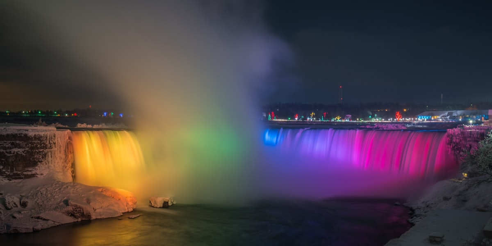

קנדה מלאה במקומות עוצרי נשימה לביקור — מפלאי טבע מפורסמים בעולם ועד אתרים עירוניים תוססים.

קנדה מלאה במקומות עוצרי נשימה לביקור — מפלאי טבע מפורסמים בעולם ועד אתרים עירוניים תוססים ואתרים היסטוריים. גם אם אתם חיים בקנדה כמהגרים חדשים ולא כתיירים, חקירת הסביבה היא אחת הדרכים הטובות ביותר להתאהב במדינה החדשה שלכם. החדשות הטובות הן שלקנדה יש מספר עצום של אטרקציות חינמיות או בעלות נמוכה.
מפלי הניאגרה הם אולי האתר המפורסם ביותר בקנדה. המשתרעים על הגבול בין אונטריו למדינת ניו יורק, המפלים הם מבין המפלים העוצמתיים ביותר על פני כדור הארץ. בין אם תבקרו בקיץ כדי להרגיש את הערפל על פניכם או בחורף כאשר הסביבה הופכת לארץ פלאות קרח מרהיבה, הניאגרה בלתי נשכחת.
הפארק הלאומי באנף באלברטה הוא יעד סמלי נוסף. השוכן בהרי הרוקי הקנדיים, באנף מציע אגמים קרחוניים בצבע טורקיז (כמו אגם לואיז הכחול באופן בלתי ייאמן), פסגות הרים מתנשאות, חיות בר רבות ועיירות הרים מקסימות. באנף הוא חלק מאתר מורשת עולמית של אונסק"ו הכולל גם את הפארקים הלאומיים ג'ספר, יוהו וקוטני. אם תוכלו לעשות את הנסיעה, זה באמת אחד המקומות היפים ביותר על פני כדור הארץ.
הערים של קנדה הן יעדי תיירות בפני עצמן. העיר העתיקה של קוויבק היא אתר מורשת עולמית של אונסק"ו ומרגישה כמו הליכה לתוך עיר מוקפת חומות אירופית — עם רחובות מרוצפים, בניינים בני מאות שנים וצרפתית הנשמעת בכל פינה. מגדל ה-CN בטורונטו מציע נוף פנורמי על העיר ועל אגם אונטריו. פארק סטנלי בוונקובר, פארק עירוני בן 405 הקטרים על חצי אי, הוא אחד הפארקים העירוניים המשובחים ביותר בעולם.
אתרים חובה נוספים כוללים את חופי החול האדום של איי הנסיך אדוארד, מפרץ פאנדי (בעל הגאויות הגבוהות ביותר בעולם), וויסלר שבבריטיש קולומביה (אתר סקי ברמה עולמית), הפארק המחוזי אלגונקווין באונטריו והזוהר הצפוני (אורורה בוראליס) הנראה מיוקון, הטריטוריות הצפון-מערביות וצפון מניטובה.
קבלו הערכה אישית מיועצת הגירה מורשית שעובדת על מקרים כמו שלכם כל יום.